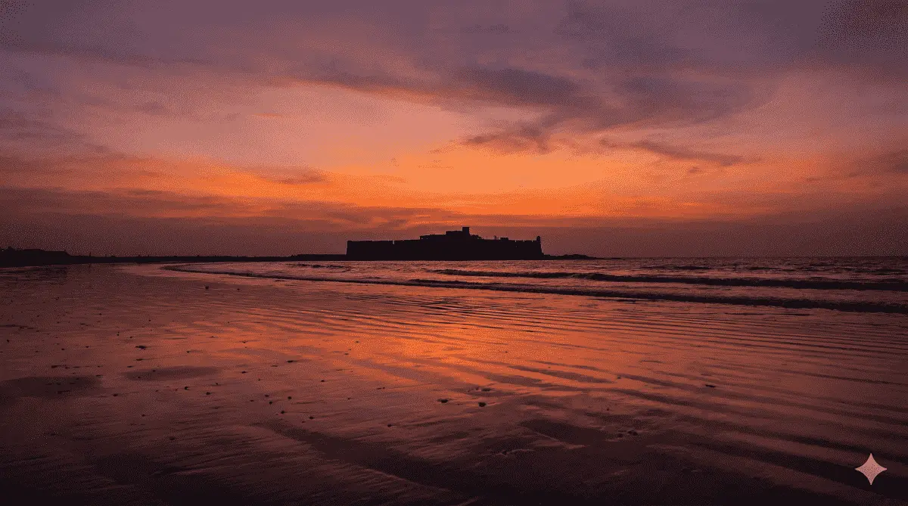
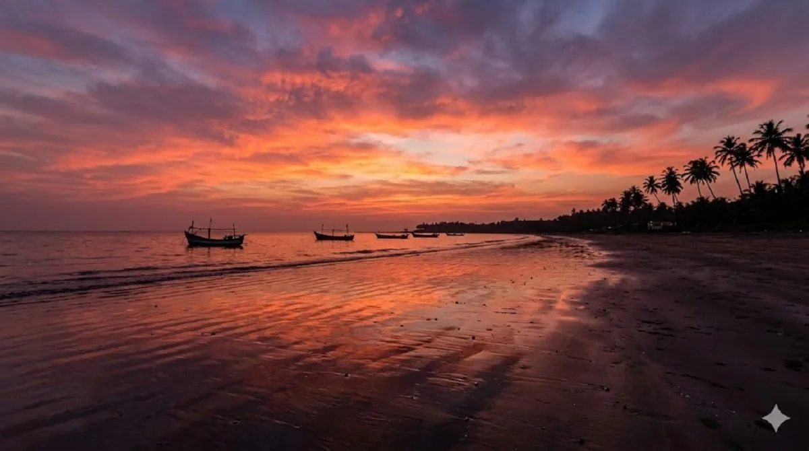

Best Places to Watch Sunset in Alibaug
Watching the sunset is one of the most memorable experiences when visiting Alibaug. Located along the Arabian Sea, the coastline offers beautiful views of the horizon where the sun slowly disappears into the sea. Many travelers visit Alibaug specifically to enjoy peaceful evening walks along the beach and watch the sunset over the water.
The best sunset spot depends on your trip style. Some beaches are easier for a quick evening stop, while others are better if you want a quieter atmosphere, photography time or a more romantic end to the day.

1. Alibaug Beach
Alibaug Beach is one of the most accessible places to watch sunset. Located close to the town center, the beach offers wide views of the Arabian Sea and the historic Kolaba Fort visible in the distance.
In the evening, the beach becomes lively with visitors walking along the shore, enjoying snacks and watching the sky change colors as the sun sets over the water.
This makes Alibaug Beach a strong pick for travelers who want sunset plus a town-side atmosphere, not just an isolated scenic stop.
2. Nagaon Beach
Nagaon Beach is one of the most popular beaches in Alibaug. It is known for its long stretch of sand, coconut trees and water sports activities.
During sunset, the beach becomes especially scenic as the evening light reflects on the sea and the sky turns shades of orange and pink.
Nagaon works especially well for travelers already staying nearby, since it lets you combine beach time, dinner and an evening walk without extra driving.

3. Kashid Beach
Kashid Beach is often considered one of the most beautiful beaches near Alibaug because of its white sand and clear water. The open coastline provides uninterrupted sunset views.
Many visitors travel to Kashid specifically for photography and scenic sunset experiences.
Kashid is usually the better option when you care more about open coastline and visual drama than about convenience.
4. Kihim Beach
Kihim Beach offers a quieter sunset experience compared to the busier beaches in Alibaug. Surrounded by greenery and natural landscapes, the beach provides a peaceful setting for evening walks.
Visitors who prefer calm and less crowded sunset locations often choose Kihim Beach.
It suits travelers who want a softer, quieter evening rather than a lively sunset crowd.
Where to Stay for Sunset Beach Views
Many travelers prefer staying at resorts near the beach so they can easily watch sunset without traveling far.
Dolphin House Beach Resort is located near Nagaon Beach and offers comfortable rooms and a relaxed coastal environment. Guests staying at the resort can enjoy beautiful evening walks along the beach.
Visit Dolphin House Beach Resort
Best sunset spot by trip type
- For convenience: Alibaug Beach
- For couples staying near Nagaon: Nagaon Beach
- For scenic photography: Kashid Beach
- For quieter evening walks: Kihim Beach

Tips for planning a sunset stop in Alibaug
Try to reach the beach a little earlier than actual sunset so the outing feels relaxed. In Alibaug, the atmosphere before sunset often matters just as much as the final few minutes of light. If the beach is part of a dinner plan, staying near your sunset spot usually makes the evening smoother.